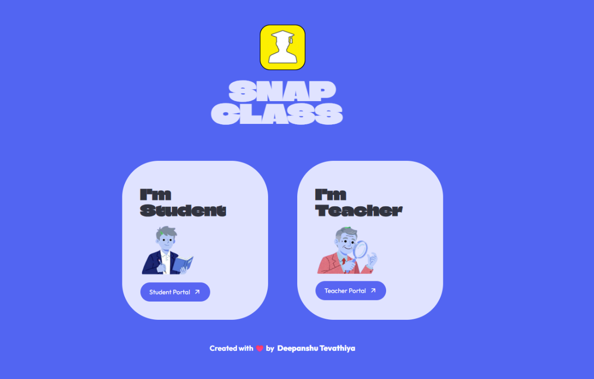

01 / AI · COMPUTER VISION
SnapClass
AI-powered smart attendance system

THE IDEA
Make classroom attendance take seconds, not minutes. SnapClass combines face and voice recognition in a dual-modal attendance pipeline.
WHAT I BUILT
Face recognition with Dlib, face_recognition and SVM; voice recognition with Resemblyzer and Librosa. The classifier retrains on each new student registration for continuous identity accuracy.
- Cut attendance from 5–10 minutes to under 10 seconds
- Five-table Supabase schema, dual-role Streamlit UI, CSV export and QR enrollment